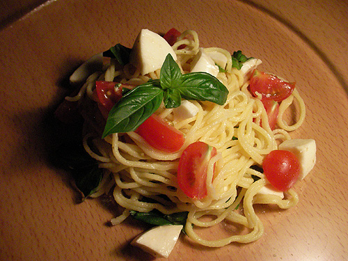
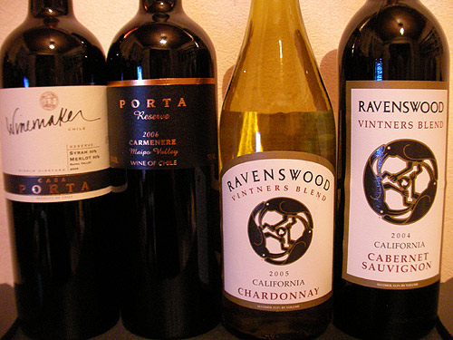
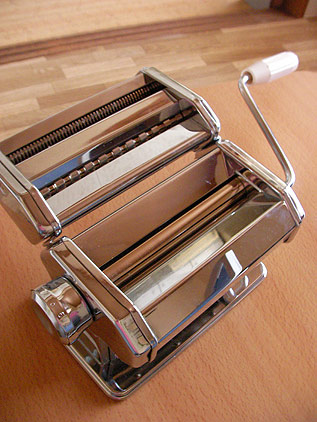
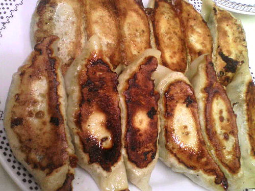
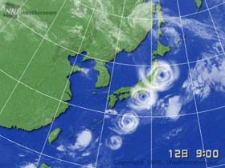
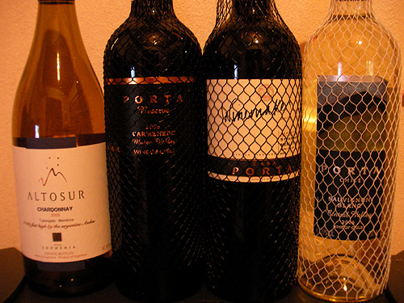

かに風味ブログ
-
やふー
やっぱり浜あるき 海って透明なんですねー。当たり前だけど。 陶片が海の中にあるのが見えるのだけど、それがまた趣があって、 拾わずにじんわり見てしまうのでした。 にしても、なんでここはこんなに印判手の…

-
来れるなら
今週末。。。鎌倉行けるかも？か？どうだどうなのだ？？？

-
魚介のリゾット・ペスカトーレ
なんだか忙しい今日この頃です。 「この仕事…ホントーに終わるのだろうか…」と毎度毎度思うのだけど、まー必ずどうにか終着駅にたどり着くことはできるのですね。 そんな今日この頃のごはん。 パスタ打ちま…

-
あしたから
宮崎で拾ったトックリキワタの種はこんなに成長いたしましたよ。 なんだかかんだか、とんでもなく忙しいのでした。あわわわわ それもこれも、あしたからオーストラリアだからなのでした。あわわ なにはともあれ…

-
タンディ・ピノ・ノワール 2002
まずはいつものシリーズ 安くてボリュームたっぷし！学生街のカツカレーのようなワインですな。コストパフォーマンスは抜群。 最近はRAVENS WOODがお気に入り。 リオハ2本。2001のリオハは当た…

-
いつものはま便り
い…いそがしいので近所の浜で欲求を満たす今日この頃です。 青磁片拾いましたよー。 でも鎌倉と違うのは釉薬がかかっている内側の土の色が真っ白。 鎌倉のはすこぅし墨を混ぜ込んだような色なんだけど。 釉…

-
んー
むぉー暑い暑い！ んにゃ…もうこの暑さは…「熱い」ですね。 でもBCの誘惑はこの暑さをも乗り越えて…とゆーことでいざ鎌倉。 が、土曜日の鎌倉は涼しかった～ 曇り空＆たまに雨がちらり。 でも浜は大…

-
ママレンジ！！！
そういえば… こんなもの買ったんだっけ… パスタマシーン！ 過去のブログを漁ったら、2004年2月購入とな！ 3年半も寝かしてました。 とりあえず… 蕎麦でも打つかぁ なぜパスタマシンでパ…

-
餃子「宝屋」
打ち合わせが遅くなって、東陽町の「宝屋」に連れてってもらいました。餃子屋さん。 見た目はどこの街にもありそーな中華料理店。 入り口では店主さん（？）が中華鍋をふりふり炒飯。 女将さんが麺棒ごろごろ餃子…

-
川俣 観光
たびたび宮崎。 んがしかし、大型台風接近とな！ いつもなら、「まーでも飛行機飛ぶだろーなー…」と、なんの根拠もない確信をもつ普段のワタクシなのだけど、なんの虫の知らせか、前日になってすべての仕事をキャ…

-
お返事遅れてごめんなさい！
久々に鎌倉の浜へ。 海の家ずらり並んでびっくりいたしましたー。 最近は海の家でも趣向を凝らしたものが多いのね。 そんなわけで、材木座トコトコ歩いて生ビール。 こーやって適当なとこでビールが飲めるのは…

-
あしたから
台風接近の宮崎に行ってきますー。 ちょいとレスが遅れたりメールのお返事が遅れるかもしれませんが、 よろしくお願いいたします。。。 皆様も台風接近お気をつけくださいませ！ では行ってきまーす！ お…

-
ひさしぶりに
久しぶりにワインネタを… …とはいえ、あいかわらず最近はコストコワインなのですが。 おすすめはRAVENSWOOD（カリフォルニア） シンファンデル3大Rのひとつ（ジンファンデル:カリフォルニアが…

-
タケプラステン
そんなこんなで ピンセットデビュー戦 暖かくなって賑わっているいつもの浜へ。 ふふふ。なんだかプロフェッショナル！な感じですよー。 シオフキ狩りで浜がほじくりかえされているせいなのか… やはりピ…

-
復旧
ぼちぼち更新。 色々バタバタしてましたが、すこーし落ち着いたので。
-
おやすみ中
身辺バタバタでブログはしばらくお休みいたします。 5月半ばあたりからポツポツ再開予定でいますので、ゆるーりお待ちくださいませ。
-
駄菓子育ち
北欧に行っていた同僚からのお土産（…のおすそわけ） 北欧名物サルミアッキ！…のさらにSUPER版(?) 見た目は黒いグミっぽいのだけど… 北欧の方々にとっては日常的に食べられている駄菓子らしいのだ…

-
はじめまして！
にゃんにゃんにゃんで猫の日ですな。 とゆーわけで、「にゃん」「にゃん」「にゃん」と3匹写真。 一匹隠れてますが。

-
いろいろと…
溜め込んでしまいました… まとめです。 まずは近所の浜。 近所の浜で初めて五弁花拾いました。 波間で転がっていて、「あ！五弁花！」とザブッと波に足を突っ込んで拾い上げました。コンニャク印判の五弁…

-
キャンドル
こないだ謎干潟で出会った謎蓋。 まえに鎌倉でこれと同じ小さいものと出会っていたので… 家で眠っていた小さいキャンドルを削って溶かして流しこんじゃいました。 着火前 着火後 芯が無かったのでティッ…